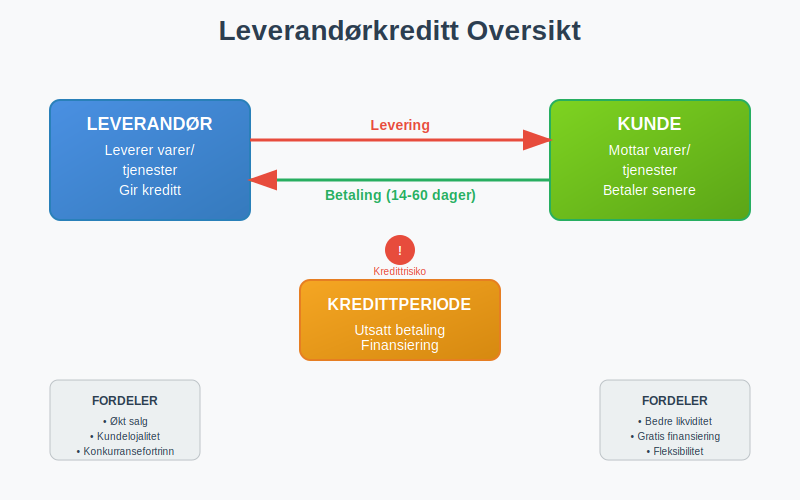
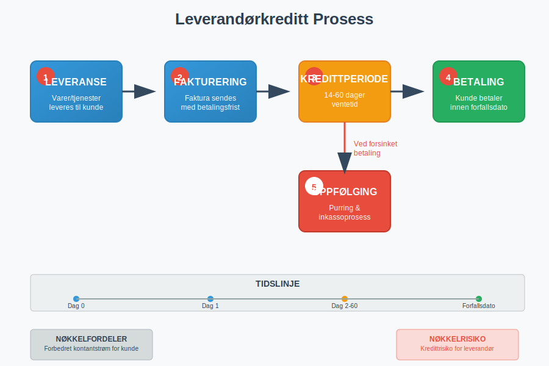
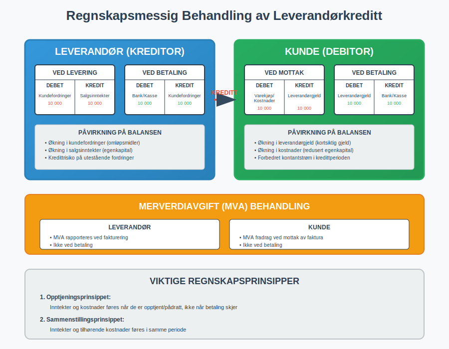
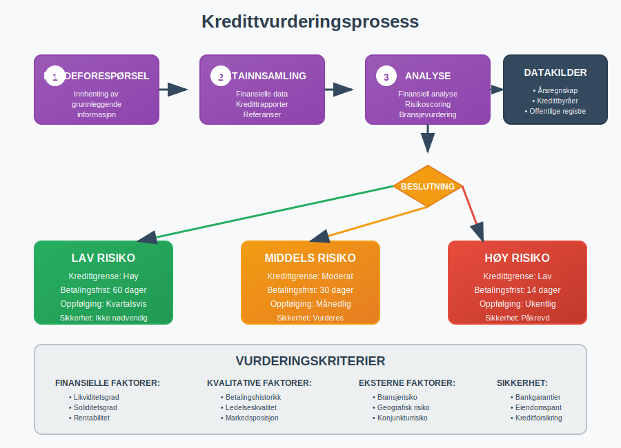
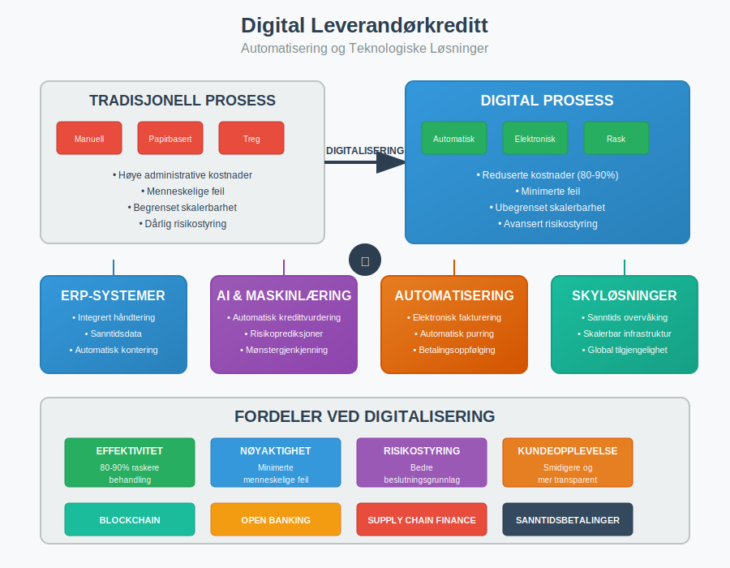

Leverandørkreditt er en finansieringsform hvor leverandører gir sine kunder utsatt betalingsfrist for varer eller tjenester. Dette er en av de mest utbredte formene for kortsiktig finansiering i næringslivet, og representerer en kritisk komponent i bedrifters arbeidskapital og kontantstrøm. Leverandørkreditt oppstår automatisk når en faktura utstedes med en betalingsfrist, og utgjør en sentral del av moderne forretningspraksis.

Seksjon 1: Hvordan Leverandørkreditt Fungerer
Leverandørkreditt oppstår når en leverandør leverer varer eller tjenester til en kunde og gir kunden tid til å betale. Dette skaper en kreditorrelasjon hvor leverandøren blir kreditor og kunden blir debitor. Prosessen integreres naturlig med bedriftens bokføringssystem og påvirker både balansen og kontantstrømoppstillingen.
Typisk Leverandørkreditt-prosess
- Leveranse: Varer eller tjenester leveres til kunden
- Fakturering: Faktura sendes med spesifisert betalingsfrist
- Kredittperiode: Kunden har tid til å betale (vanligvis 14-60 dager)
- Betaling: Kunden betaler innen forfallsdato
- Oppfølging: Ved forsinket betaling iverksettes inkassoprosess

Seksjon 2: Typer Leverandørkreditt
Leverandørkreditt kan struktureres på ulike måter avhengig av bransje, kundeforhold og risikoprofil. Valg av kreditttype påvirker både likviditet og finansieringsstrategien til bedriften.
2.1 Handelskreditt (Trade Credit)
Den vanligste formen for leverandørkreditt hvor betalingsfristen vanligvis er mellom 14-60 dager. Dette er standardpraksisen i de fleste bransjer og reguleres gjennom handelsbetingelser som avtales mellom partene.
2.2 Kontantrabatt-ordninger
Mange leverandører tilbyr kontantrabatt for tidlig betaling, for eksempel “2/10 netto 30” som betyr 2% rabatt ved betaling innen 10 dager, ellers forfaller hele beløpet etter 30 dager. Dette incentiverer rask betaling og forbedrer leverandørens kontantstrøm.
2.3 Rullerende Kredittlinjer
For kunder med høy omsetning kan leverandører etablere rullerende kredittlinjer med månedlige oppgjør. Dette ligner på en kredittkontoordning hvor kunden kan handle opp til en fastsatt kredittgrense.
2.4 Konsignasjonslager
En spesiell form hvor leverandøren eier varene frem til de selges av kunden. Dette reduserer kundens lagerbeholdning og arbeidskapitalbehov betydelig.
Seksjon 3: Regnskapsmessig Behandling
Leverandørkreditt påvirker flere områder av regnskapet og krever korrekt kontering og oppfølging. Både leverandør og kunde må håndtere de regnskapsmessige konsekvensene korrekt.

For Leverandøren (Kreditor)
Når leverandøren gir kreditt, oppstår følgende regnskapsposter:
| Tidspunkt | Debet | Kredit | Beskrivelse |
|---|---|---|---|
| Ved levering | Kundefordringer | Salgsinntekter | Registrering av salg |
| Ved betaling | Bank/Kasse | Kundefordringer | Innbetaling fra kunde |
| Ved tap | Tap på fordringer | Kundefordringer | Nedskrivning av uinnkrevelig fordring |
For Kunden (Debitor)
Kunden registrerer følgende:
| Tidspunkt | Debet | Kredit | Beskrivelse |
|---|---|---|---|
| Ved mottak | Varekjøp/Kostnader | Leverandørgjeld | Registrering av kjøp |
| Ved betaling | Leverandørgjeld | Bank/Kasse | Betaling til leverandør |
Merverdiavgift (MVA)
Leverandørkreditt påvirker også MVA-behandlingen. MVA skal normalt rapporteres når fakturaen utstedes, ikke når betalingen mottas, noe som kan skape likviditetsutfordringer for leverandøren.
Seksjon 4: Fordeler og Ulemper
Leverandørkreditt har både fordeler og ulemper for begge parter i transaksjonen. Forståelse av disse aspektene er kritisk for optimal finansiell styring.
Fordeler for Kunden
- Forbedret likviditet: Utsatt betaling forbedrer kontantstrømmen
- Redusert finansieringsbehov: Mindre behov for banklån eller annen ekstern finansiering
- Fleksibilitet: Mulighet til å selge varer før betaling forfaller
- Kostnadseffektivt: Ofte gratis finansiering sammenlignet med banklån
- Forhandlingsmakt: Kan brukes som forhandlingskort i leverandørforhold
Ulemper for Kunden
- Avhengighet: Kan skape avhengighet av leverandørens kredittvillighet
- Begrenset fleksibilitet: Kredittvilkår kan være mindre fleksible enn banklån
- Leverandørrisiko: Risiko ved leverandørens finansielle problemer
- Tapte kontantrabatter: Går glipp av rabatter for tidlig betaling
Fordeler for Leverandøren
- Økt salg: Kan øke salget ved å tilby attraktive betalingsvilkår
- Kundelojalitet: Styrker kundeforholdet og skaper binding
- Konkurransefortrinn: Kan differensiere seg fra konkurrenter
- Høyere marginer: Kan kompensere for kredittrisiko med høyere priser
Ulemper for Leverandøren
- Kredittrisiko: Risiko for tap ved kundens betalingsudyktighet
- Likviditetsbelastning: Binder opp arbeidskapital
- Administrative kostnader: Økte kostnader for oppfølging og inkasso
- Finansieringskostnader: Må selv finansiere den utestående fordringen
Seksjon 5: Risikostyring og Kredittvurdering
Effektiv risikostyring er essensielt for å minimere tap på leverandørkreditt. Dette krever systematisk kredittvurdering og oppfølging av kundeforhold.

Kredittvurderingskriterier
Før kreditt innvilges, bør følgende faktorer vurderes:
- Finansiell stilling: Analyse av kundens balanse og resultatregnskap
- Betalingshistorikk: Tidligere betalingsadferd og pålitelighet
- Bransjerisiko: Konjunkturmessige og strukturelle risikofaktorer
- Geografisk risiko: Politisk og økonomisk stabilitet i kundens marked
- Kredittrapporter: Informasjon fra kredittbyråer og offentlige registre
Kredittgrenser og Overvåking
Etablering av kredittgrenser basert på kundens finansielle kapasitet og risikoprofil:
| Risikoklasse | Kredittgrense | Betalingsfrist | Oppfølging |
|---|---|---|---|
| Lav risiko | Høy | 60 dager | Kvartalsvis |
| Middels risiko | Moderat | 30 dager | Månedlig |
| Høy risiko | Lav | 14 dager | Ukentlig |
| Ny kunde | Begrenset | 14 dager | Kontinuerlig |
Sikringsmekanismer
For å redusere kredittrisiko kan følgende sikringsmekanismer benyttes:
- Kreditforsikring: Forsikring mot tap på kundefordringer
- Factoring: Salg av fordringer til factoringselskap
- Bankgarantier: Sikkerhet fra kundens bank
- Eiendomspant: Pant i kundens eiendeler
- Personlig kausjon: Personlig ansvar fra kundens eiere
Seksjon 6: Leverandørkreditt vs. Andre Finansieringsformer
Leverandørkreditt må vurderes i sammenheng med andre tilgjengelige finansieringsalternativer. Hver finansieringsform har sine unike karakteristika og kostnadsstrukturer.
Sammenligning av Finansieringsalternativer
| Finansieringstype | Kostnad | Fleksibilitet | Tilgjengelighet | Sikkerhetskrav |
|---|---|---|---|---|
| Leverandørkreditt | Lav-Middels | Middels | Høy | Lav |
| Banklån | Middels | Høy | Middels | Høy |
| Factoring | Høy | Høy | Middels | Lav |
| Kontokredit | Høy | Høy | Middels | Middels |
| Egenkapital | Lav | Lav | Lav | Ingen |
Når Leverandørkreditt er Optimalt
Leverandørkreditt er særlig fordelaktig når:
- Bedriften har stabile kundeforhold med lav kredittrisiko
- Bransjen har etablerte kreditttradisjoner
- Konkurransesituasjonen krever fleksible betalingsvilkår
- Bedriften har god likviditet til å finansiere utestående fordringer
- Administrative systemer for kredittstyring er på plass
Seksjon 7: Digitalisering og Automatisering
Moderne teknologi har revolusjonert håndteringen av leverandørkreditt gjennom automatisering og digitale løsninger. Dette påvirker både effektivitet og risikostyring betydelig.

Teknologiske Løsninger
- ERP-systemer: Integrert håndtering av salg, fakturering og kredittstyring
- Elektronisk fakturering: Raskere fakturabehandling og reduserte kostnader
- Automatisk kredittvurdering: AI-baserte systemer for risikovurdering
- Sanntids overvåking: Kontinuerlig oppfølging av kunders finansielle stilling
- Automatisk purring: Systematisk oppfølging av forfalte fordringer
Fordeler ved Digitalisering
- Reduserte administrative kostnader: Automatisering av rutineoppgaver
- Forbedret risikostyring: Bedre datagrunnlag for beslutninger
- Raskere prosesser: Kortere behandlingstid fra salg til betaling
- Bedre kundeopplevelse: Smidigere og mer transparent prosess
- Integrerte arbeidsflyter: Sømløs integrasjon med andre forretningsprosesser
Seksjon 8: Juridiske Aspekter og Regelverk
Leverandørkreditt er regulert av flere lover og forskrifter som påvirker både rettigheter og plikter for begge parter. Forståelse av det juridiske rammeverket er kritisk for å unngå konflikter og sikre rettmessig behandling.
Relevant Lovgivning
- Bokføringsloven: Krav til dokumentasjon og regnskapsføring
- Inkassoloven: Regulerer oppfølging av forfalte fordringer
- Forsinkelsesrenteloven: Fastsetter renter ved forsinket betaling
- Avtaleloven: Generelle kontraktsrettslige prinsipper
- Konkursloven: Behandling av fordringer ved konkurs
Rettigheter og Plikter
Leverandørens rettigheter:
- Krav på betaling innen avtalt frist
- Forsinkelsesrente ved forsinket betaling
- Rett til å kreve inn fordringen gjennom inkasso
- Eiendomsforbehold i leverte varer (hvis avtalt)
Kundens rettigheter:
- Rett til korrekt fakturering og dokumentasjon
- Beskyttelse mot urimelige inkassokrav
- Rett til å bestride feil på fakturaer
- Rett til rimelig behandling ved betalingsproblemer
Seksjon 9: Internasjonale Aspekter
Ved internasjonal handel kompliseres leverandørkreditt av valutarisiko, kulturelle forskjeller og ulike juridiske systemer. Dette krever spesialisert kunnskap og tilpassede løsninger.
Spesielle Utfordringer
- Valutarisiko: Svingninger i valutakurser påvirker verdien av fordringer
- Politisk risiko: Ustabilitet i kundens land kan påvirke betalingsevne
- Kulturelle forskjeller: Ulike betalingstradisjoner og forretningspraksis
- Juridiske forskjeller: Varierende lovgivning og rettssystemer
- Lengre kredittperioder: Ofte lengre betalingsfrister i internasjonal handel
Risikohåndtering
- Eksportkredittforsikring: Spesialisert forsikring for eksportfordringer
- Remburs: Bankgaranterte betalingsløsninger
- Valutasikring: Terminkontrakter for å eliminere valutarisiko
- Lokale partnere: Samarbeid med lokale aktører for bedre markedskunnskap
Seksjon 10: Fremtidige Trender
Leverandørkreditt utvikler seg kontinuerlig påvirket av teknologiske fremskritt, regulatoriske endringer og endrede markedsforhold.
Teknologiske Trender
- Blockchain-teknologi: Økt transparens og sikkerhet i transaksjoner
- Kunstig intelligens: Forbedret kredittvurdering og risikoprediksjoner
- Open Banking: Bedre tilgang til kunders finansielle data
- Supply Chain Finance: Integrerte finansieringsløsninger for hele verdikjeden
- Sanntidsbetalinger: Raskere oppgjør og redusert kredittbehov
Regulatoriske Utviklinger
- Økt fokus på bærekraft: ESG-krav påvirker kredittbeslutninger
- Databeskyttelse: Strengere krav til håndtering av kundeinformasjon
- Konkurranseregulering: Fokus på rettferdig konkurranse i kredittmarkedet
Leverandørkreditt vil fortsette å være en sentral del av moderne forretningsdrift, men vil utvikle seg mot mer sofistikerte, teknologidrevne løsninger som balanserer effektivitet med risikostyring. Bedrifter som mestrer denne utviklingen vil ha betydelige konkurransefortrinn i fremtidens marked.